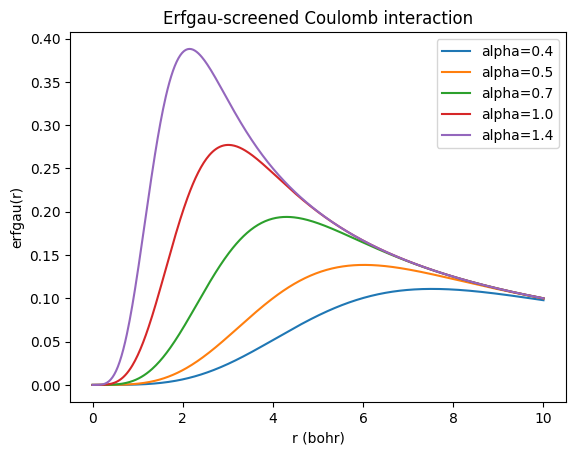

15. Electronegativity Equalization Method#
This notebook shows how to compute atomic charges using the electronegativity equalization method. The basic idea is that dependence of the energy of an atom (or group) in a molecule can be written as a Taylor series,
which, by convention, we truncate at second order. The first derivative is the electronic chemical potential (the negative of the electronegativity, \(\chi\); also called the Fermi level) and the second derivative is the chemical hardness, \(\eta\) (also called the band gap). Thus, we can write
Using the known energies of the \(N_0\), \(N_0 + 1\), and \(N_0 - 1\) states, we can solve for \(\mu_A\) and \(\eta_A\), obtaining the Mulliken electronegativity and Parr-Pearson hardness, $\( \mu_A = \frac{1}{2} (E(N_0 + 1) - E(N_0 - 1)) = -\tfrac{1}{2} (I + A) \)\( \)\( \eta_A = E(N_0 + 1) + E(N_0 - 1) - 2E(N_0) = I - A \)\( where \)I = E(N_0) - E(N_0 + 1) \ge 0\( is the ionization potential and \)A = E(N_0 - 1) - E(N_0) \ge 0$ is the electron affinity.
The total energy is then, $\( \begin{split} E_{\text{total}} &= \sum_A E_A(N_{A,0} + \Delta N_A) \\ &= \sum_A E_A(N_{A,0}) + \sum_A \mu_A \Delta N_A + \frac{1}{2} \sum_A \eta_A (\Delta N_A)^2 + \frac{1}{2} \sum_{A \ne B} J_{AB} \Delta N_A \Delta N_B \end{split} \)\( This assumes that the atoms/groups "reference state" is neutral so that their charge is just \)q_A = -\Delta N_A\(. The last term is the Coulomb interaction between the charges, where \)J_{AB}\( is the Coulomb integral between the charge distributions of atoms/groups \)A\( and \)B\(. We could evaluate the Coulomb integral between the charge distributions analytically using [`AtomDB`](https://atomdb.qcdevs.org/api/index.html) or [`Bfit`](https://bfit.qcdevs.org/), but this is not what is usually done in practice. Instead, the Coulomb interaction is usually screened, so that for electrostatic interactions between bonded atoms and atoms bonded to a common atom (linked by a bond angle) the Coulomb interaction is nearly neglected, while for atoms linked by a torsion the electrostatic interaction is screened. We'll use an [erfgau screening](https://arxiv.org/pdf/physics/0410062), \)\( J_{AB} = \frac{\operatorname{erf}(\alpha R_{AB})}{R_{AB}} - \frac{2\alpha}{\sqrt{\pi}} \exp\left({-\tfrac{\alpha^2R_{AB}^2}{3}}\right) \)$
Now, to obtain the charges, we minimize the total energy with respect to the amount of electron transfer, \(\Delta N_A\), subject to the constraint that the total charge is fixed, \(\sum_A \Delta N_A = -Q\). $\( \min_{\{\Delta N_A\}} E_{\text{total}} \quad \text{subject to} \quad \sum_A \Delta N_A = -Q \)\( Forcing the constraint with the Lagrange multiplier, \)\mu_{\text{total}}\(, we have the Lagrangian, \)\( \mathcal{L} = E_{\text{total}} + \mu_{\text{total}} \left( \sum_A \Delta N_A + Q \right) \)\( Differentiating the Lagrangian and setting it equal to zero gives a system of \)P+1\( linear equations, where \)P\( is the number of atoms/groups, \)\( \begin{split} 0 &= \frac{\partial E_{\text{total}}}{\partial \Delta N_1} + \mu_{\text{total}} \\ 0 &= \frac{\partial E_{\text{total}}}{\partial \Delta N_2} + \mu_{\text{total}} \\ &\vdots \\ 0 &= \frac{\partial E_{\text{total}}}{\partial \Delta N_P} + \mu_{\text{total}} \\ 0 &= \sum_A \Delta N_A + Q \end{split} \)\( Using the explicit expression for the total energy, this system of equations can be written in matrix form as \)\( \mathbf{A}\boldsymbol{\delta}=\mathbf{m}, \)\( where \)$ \begin{aligned} \mathbf{A} &= \begin{bmatrix} \eta_1 & J_{12} & \cdots & J_{1P} & 1 \ J_{21} & \eta_2 & \cdots & J_{2P} & 1 \ \vdots & \vdots & \ddots & \vdots & \vdots \ J_{P1} & J_{P2} & \cdots & \eta_P & 1 \ 1 & 1 & \cdots & 1 & 0 \end{bmatrix}, \[1em] \boldsymbol{\delta} &= \begin{bmatrix} \Delta N_1 \ \Delta N_2 \ \vdots \ \Delta N_P \ \mu_{\mathrm{total}} \end{bmatrix}, \[1em] \mathbf{m} &= \begin{bmatrix} \mu_1 \ \mu_2 \ \vdots \ \mu_P \
Q \end{bmatrix}. \end{aligned} $$
We take benchmark values of the chemical potentials and hardnesses from this reference, using AtomDB.
!pip install qc-atomdb
!pip install qc-iodata
Collecting qc-atomdb
Downloading qc_AtomDB-0.0.2.post5-py3-none-any.whl.metadata (7.0 kB)
Requirement already satisfied: numpy>=1.16 in /opt/hostedtoolcache/Python/3.14.3/x64/lib/python3.14/site-packages (from qc-atomdb) (2.4.4)
Requirement already satisfied: scipy>=1.4 in /opt/hostedtoolcache/Python/3.14.3/x64/lib/python3.14/site-packages (from qc-atomdb) (1.17.1)
Collecting msgpack>=1.0.0 (from qc-atomdb)
Downloading msgpack-1.1.2-cp314-cp314-manylinux2014_x86_64.manylinux_2_17_x86_64.manylinux_2_28_x86_64.whl.metadata (8.1 kB)
Collecting msgpack-numpy>=0.4.8 (from qc-atomdb)
Downloading msgpack_numpy-0.4.8-py2.py3-none-any.whl.metadata (5.0 kB)
Collecting h5py>=3.6.0 (from qc-atomdb)
Downloading h5py-3.16.0-cp314-cp314-manylinux_2_28_x86_64.whl.metadata (3.0 kB)
Collecting importlib-resources>=3.0.0 (from qc-atomdb)
Downloading importlib_resources-6.5.2-py3-none-any.whl.metadata (3.9 kB)
Collecting pooch>=1.8.1 (from qc-atomdb)
Downloading pooch-1.9.0-py3-none-any.whl.metadata (10 kB)
Requirement already satisfied: platformdirs>=2.5.0 in /opt/hostedtoolcache/Python/3.14.3/x64/lib/python3.14/site-packages (from pooch>=1.8.1->qc-atomdb) (4.9.4)
Requirement already satisfied: packaging>=20.0 in /opt/hostedtoolcache/Python/3.14.3/x64/lib/python3.14/site-packages (from pooch>=1.8.1->qc-atomdb) (26.0)
Requirement already satisfied: requests>=2.19.0 in /opt/hostedtoolcache/Python/3.14.3/x64/lib/python3.14/site-packages (from pooch>=1.8.1->qc-atomdb) (2.33.1)
Requirement already satisfied: charset_normalizer<4,>=2 in /opt/hostedtoolcache/Python/3.14.3/x64/lib/python3.14/site-packages (from requests>=2.19.0->pooch>=1.8.1->qc-atomdb) (3.4.6)
Requirement already satisfied: idna<4,>=2.5 in /opt/hostedtoolcache/Python/3.14.3/x64/lib/python3.14/site-packages (from requests>=2.19.0->pooch>=1.8.1->qc-atomdb) (3.11)
Requirement already satisfied: urllib3<3,>=1.26 in /opt/hostedtoolcache/Python/3.14.3/x64/lib/python3.14/site-packages (from requests>=2.19.0->pooch>=1.8.1->qc-atomdb) (2.6.3)
Requirement already satisfied: certifi>=2023.5.7 in /opt/hostedtoolcache/Python/3.14.3/x64/lib/python3.14/site-packages (from requests>=2.19.0->pooch>=1.8.1->qc-atomdb) (2026.2.25)
Downloading qc_AtomDB-0.0.2.post5-py3-none-any.whl (62.0 MB)
?25l ━━━━━━━━━━━━━━━━━━━━━━━━━━━━━━━━━━━━━━━━ 0.0/62.0 MB ? eta -:--:--
━━━━━━━━━━━╺━━━━━━━━━━━━━━━━━━━━━━━━━━━━ 17.8/62.0 MB 110.9 MB/s eta 0:00:01
━━━━━━━━━━━━━━━━━╸━━━━━━━━━━━━━━━━━━━━━━ 27.3/62.0 MB 138.6 MB/s eta 0:00:01
━━━━━━━━━━━━━━━━━━━━━━━━━━╸━━━━━━━━━━━━━ 41.4/62.0 MB 73.4 MB/s eta 0:00:01
━━━━━━━━━━━━━━━━━━━━━━━━━━━━━━━━━━╺━━━━━ 53.5/62.0 MB 73.5 MB/s eta 0:00:01
━━━━━━━━━━━━━━━━━━━━━━━━━━━━━━━━━━━━━━━━ 62.0/62.0 MB 71.3 MB/s 0:00:00
?25h
Downloading h5py-3.16.0-cp314-cp314-manylinux_2_28_x86_64.whl (5.4 MB)
?25l ━━━━━━━━━━━━━━━━━━━━━━━━━━━━━━━━━━━━━━━━ 0.0/5.4 MB ? eta -:--:--
━━━━━━━━━━━━━━━━━━━━━━━━━━━━━━━━━━━━━━━━ 5.4/5.4 MB 264.2 MB/s 0:00:00
?25hDownloading importlib_resources-6.5.2-py3-none-any.whl (37 kB)
Downloading msgpack-1.1.2-cp314-cp314-manylinux2014_x86_64.manylinux_2_17_x86_64.manylinux_2_28_x86_64.whl (419 kB)
Downloading msgpack_numpy-0.4.8-py2.py3-none-any.whl (6.9 kB)
Downloading pooch-1.9.0-py3-none-any.whl (67 kB)
Installing collected packages: msgpack, importlib-resources, h5py, pooch, msgpack-numpy, qc-atomdb
?25l
━━━━━━━━━━━━━╺━━━━━━━━━━━━━━━━━━━━━━━━━━ 2/6 [h5py]
━━━━━━━━━━━━━━━━━━━━╺━━━━━━━━━━━━━━━━━━━ 3/6 [pooch]
━━━━━━━━━━━━━━━━━━━━━━━━━━━━━━━━━╺━━━━━━ 5/6 [qc-atomdb]
━━━━━━━━━━━━━━━━━━━━━━━━━━━━━━━━━╺━━━━━━ 5/6 [qc-atomdb]
━━━━━━━━━━━━━━━━━━━━━━━━━━━━━━━━━━━━━━━━ 6/6 [qc-atomdb]
?25h
Successfully installed h5py-3.16.0 importlib-resources-6.5.2 msgpack-1.1.2 msgpack-numpy-0.4.8 pooch-1.9.0 qc-atomdb-0.0.2.post5
Collecting qc-iodata
Downloading qc_iodata-1.0.1-py3-none-any.whl.metadata (4.4 kB)
Requirement already satisfied: numpy>=1.26.4 in /opt/hostedtoolcache/Python/3.14.3/x64/lib/python3.14/site-packages (from qc-iodata) (2.4.4)
Requirement already satisfied: scipy>=1.13.1 in /opt/hostedtoolcache/Python/3.14.3/x64/lib/python3.14/site-packages (from qc-iodata) (1.17.1)
Requirement already satisfied: attrs>=21.3.0 in /opt/hostedtoolcache/Python/3.14.3/x64/lib/python3.14/site-packages (from qc-iodata) (26.1.0)
Downloading qc_iodata-1.0.1-py3-none-any.whl (3.4 MB)
?25l ━━━━━━━━━━━━━━━━━━━━━━━━━━━━━━━━━━━━━━━━ 0.0/3.4 MB ? eta -:--:--
━━━━━━━━━━━━━━━━━━━━━━━━╸━━━━━━━━━━━━━━━ 2.1/3.4 MB 12.7 MB/s eta 0:00:01
━━━━━━━━━━━━━━━━━━━━━━━━━━━━━━━━━━━━━━━━ 3.4/3.4 MB 15.0 MB/s 0:00:00
?25h
Installing collected packages: qc-iodata
Successfully installed qc-iodata-1.0.1
import numpy as np
from scipy.special import erf
def erfgau(r, alpha=0.5):
"""
Savin's erfgau long-range interaction:
v(r) = erf(mu*r)/r - (2*mu/sqrt(pi)) * exp(-(mu*r)^2 / 3)
Parameters
----------
r
Interparticle distance(s). May be a positive float or a NumPy array
of positive distances.
alpha
Range-separation parameter. Must be nonnegative. The default
value is set so that for a 1-3 interactions of ~6 bohr the erfgau
screening is roughly 20%. As this number increases the screening becomes
less aggressive.
Returns
-------
float or np.ndarray
The erfgau interaction evaluated at r.
"""
if alpha < 0.0:
raise ValueError("alpha must be nonnegative.")
# Set a tolerance for zero to avoid issues with very small distances
tol = 1e-12
# Treat scalar case separately
if np.isscalar(r):
r = float(r)
if r < 0:
raise ValueError("r must be nonnegative.")
elif r < tol:
# For very small r, use the limit as r -> 0 to avoid numerical issues
return 0.0
else:
x = alpha * r
return erf(x) / r - (2.0 * alpha / np.sqrt(np.pi)) * np.exp(-(x**2) / 3.0)
r_arr = np.asarray(r, dtype=float)
if np.any(r_arr < 0.0):
raise ValueError("All elements of r must be nonnegative.")
x = alpha * r_arr
# Form an array to hold the input and initalize it to zero
erfgau = np.zeros_like(r_arr)
# For very small r, zero is the answer so the intialization is correct.
# For larger r, compute the erfgau interaction as normal. We can do this with
# np.where.
erfgau = np.where(r_arr < tol, 0.0, erf(x) / r_arr - (2.0 * alpha / np.sqrt(np.pi)) * np.exp(-(x**2) / 3.0))
return erfgau
#Plot Erfgau vs r for different parameters.
import matplotlib.pyplot as plt
r = np.linspace(0, 10, 500)
for alpha in [0.4, 0.5, 0.7, 1.0, 1.4]:
plt.plot(r, erfgau(r, alpha), label=f"alpha={alpha}")
plt.xlabel("r (bohr)")
plt.ylabel("erfgau(r)")
plt.title("Erfgau-screened Coulomb interaction")
plt.legend()
plt.show()
/tmp/ipykernel_2854/1849752753.py:55: RuntimeWarning: invalid value encountered in divide
erfgau = np.where(r_arr < tol, 0.0, erf(x) / r_arr - (2.0 * alpha / np.sqrt(np.pi)) * np.exp(-(x**2) / 3.0))

# Load the geometry from a file (using IOData)
from urllib.request import urlretrieve
from iodata import load_one
url = "https://github.com/theochem/chemtools/raw/refs/heads/master/chemtools/data/examples/dichloropyridine26_q+0.fchk"
urlretrieve(url, "dichloropyridine26_q0.fchk")
mol0 = load_one("dichloropyridine26_q0.fchk")
print(mol0.atnums)
print(mol0.atcoords)
[17 17 7 6 6 6 6 6 1 1 1]
[[-4.95130924e+00 2.31173977e+00 -2.64561659e-04]
[ 4.95149821e+00 2.31139962e+00 2.07869875e-04]
[ 7.55890453e-05 1.84250188e+00 -1.88972613e-05]
[-9.44863066e-05 -3.41775868e+00 1.13383568e-04]
[-2.28277027e+00 -2.09580077e+00 -1.88972613e-05]
[ 2.28267578e+00 -2.09595195e+00 1.70075352e-04]
[-2.13763930e+00 5.39856962e-01 -3.77945227e-05]
[ 2.13769600e+00 5.39705784e-01 7.55890453e-05]
[-1.70075352e-04 -5.47831606e+00 1.51178091e-04]
[-4.10063012e+00 -3.05289036e+00 -7.55890453e-05]
[ 4.10047894e+00 -3.05315492e+00 2.83458920e-04]]
# Retrieve the chemical potentials and hardnesses using AtomDB
import atomdb
from atomdb import Element
def nist_mu_eta_for_atoms(atnums):
"""return a numpy array of mu's and eta's for the given atomic numbers"""
atnums = np.asarray(atnums, dtype=int)
mu = np.empty(len(atnums))
eta = np.empty(len(atnums))
for i, z in enumerate(atnums):
mult = Element(z).mult # neutral ground-state multiplicity
sp = atomdb.load(z, charge=0, mult=mult, dataset="nist")
mu[i] = sp.mu
eta[i] = sp.eta
return mu, eta
# Example with your molecule atomic numbers:
# atnums = h2o.atnums # or your molecule's atnums
mu, eta = nist_mu_eta_for_atoms(mol0.atnums)
print("mu =", mu)
print("eta =", eta)
Downloading data from 'https://raw.githubusercontent.com/theochem/AtomDBdata/main/nist/db/Cl_000_002_000.msg' to file '/opt/hostedtoolcache/Python/3.14.3/x64/lib/python3.14/site-packages/atomdb/datasets/nist/db/Cl_000_002_000.msg'.
SHA256 hash of downloaded file: 07a26c7400ba83f656824316604b3fae3916aaad869d4ac8cf86a3980dae5380
Use this value as the 'known_hash' argument of 'pooch.retrieve' to ensure that the file hasn't changed if it is downloaded again in the future.
Downloading data from 'https://raw.githubusercontent.com/theochem/AtomDBdata/main/nist/db/N_000_004_000.msg' to file '/opt/hostedtoolcache/Python/3.14.3/x64/lib/python3.14/site-packages/atomdb/datasets/nist/db/N_000_004_000.msg'.
SHA256 hash of downloaded file: be4cbc4099c0e301ea914ce7c558555ad38ccee7425b57bf93c94e94f44065ae
Use this value as the 'known_hash' argument of 'pooch.retrieve' to ensure that the file hasn't changed if it is downloaded again in the future.
Downloading data from 'https://raw.githubusercontent.com/theochem/AtomDBdata/main/nist/db/C_000_003_000.msg' to file '/opt/hostedtoolcache/Python/3.14.3/x64/lib/python3.14/site-packages/atomdb/datasets/nist/db/C_000_003_000.msg'.
SHA256 hash of downloaded file: ead0c0345a38ceee1b301266de10c9571fdaed2e711a0220b4479920bdd9ae2b
Use this value as the 'known_hash' argument of 'pooch.retrieve' to ensure that the file hasn't changed if it is downloaded again in the future.
Downloading data from 'https://raw.githubusercontent.com/theochem/AtomDBdata/main/nist/db/H_000_002_000.msg' to file '/opt/hostedtoolcache/Python/3.14.3/x64/lib/python3.14/site-packages/atomdb/datasets/nist/db/H_000_002_000.msg'.
SHA256 hash of downloaded file: 6ac81ca278c2b1e98af89d2ea9e018c0766fbd041d2e588e0e34d2ab620a8867
Use this value as the 'known_hash' argument of 'pooch.retrieve' to ensure that the file hasn't changed if it is downloaded again in the future.
mu = [-0.30465188 -0.30465188 -0.26716757 -0.23005076 -0.23005076 -0.23005076
-0.23005076 -0.23005076 -0.26386013 -0.26386013 -0.26386013]
eta = [0.34360616 0.34360616 0.53396765 0.36749322 0.36749322 0.36749322
0.36749322 0.36749322 0.4718613 0.4718613 0.4718613 ]
# Set up the equations to solve for the charges and print out the charges.
from scipy.spatial.distance import pdist, squareform
def eem_charges(atnums, atcoords, mu, eta, mol_charge, alpha=0.5):
"""Compute EEM atomic charges.
Builds and solves the (P+1) x (P+1) EEM linear system A·δ = m, where
the diagonal contains the atomic hardnesses, the off-diagonal atom-atom
blocks contain the erfgau-screened Coulomb interaction J_AB, the border
row and column enforce the charge constraint, and the right-hand side
contains the negative chemical potentials and the total molecular charge.
Parameters
----------
atnums : array-like of int, shape (P,)
Atomic numbers (used only to determine P; properties come from mu/eta).
atcoords : numpy.ndarray, shape (P, 3)
Atomic coordinates in bohr.
mu : numpy.ndarray, shape (P,)
Atomic chemical potentials (negative electronegativities).
eta : numpy.ndarray, shape (P,)
Atomic chemical hardnesses.
mol_charge : float
Total molecular charge Q.
alpha : float
Range-separation parameter for the erfgau Coulomb screening.
Returns
-------
charges : numpy.ndarray, shape (P,)
EEM atomic charges q_A = -Delta N_A.
mu_total : float
Equilibrated chemical potential (Lagrange multiplier).
"""
atcoords = np.asarray(atcoords)
mu = np.asarray(mu)
eta = np.asarray(eta)
P = len(mu)
# Build the (P+1) x (P+1) EEM matrix A
A = np.zeros((P + 1, P + 1))
# Off-diagonal atom-atom blocks: erfgau-screened Coulomb interaction.
# pdist returns only the upper-triangle distances (no zeros), so erfgau
# never sees r=0 and no divide-by-zero warning is raised.
A[:P, :P] = squareform(erfgau(pdist(atcoords), alpha))
# Diagonal: atomic hardnesses (set after the off-diagonal fill so they
# are not overwritten by the squareform step above).
np.fill_diagonal(A[:P, :P], eta)
# Border row and column: charge constraint
A[:P, P] = 1.0
A[P, :P] = 1.0
# A[P, P] = 0 (already zero from initialization)
# Build the right-hand side m
m = np.empty(P + 1)
m[:P] = -1*mu
m[P] = -1*mol_charge
# Solve A·delta = m where delta = [Delta_N_1, ..., Delta_N_P, mu_total]
delta = np.linalg.solve(A, m)
charges = -1*delta[:P] # q_A = -Delta N_A
mu_total = -1*delta[P]
return charges, mu_total
charges, mu_total = eem_charges(mol0.atnums, mol0.atcoords, mu, eta, mol_charge=0,alpha=0.5)
print("Atomic charges:", charges)
print("Equilibrated chemical potential:", mu_total)
print("Sum of charges:", charges.sum())
Atomic charges: [-0.28375011 -0.28374982 -0.01416517 0.18020443 0.1505785 0.15057809
0.06419838 0.0641997 -0.00754719 -0.01027312 -0.0102737 ]
Equilibrated chemical potential: -0.24684627271641874
Sum of charges: 1.0061396160665481e-16
Play around with the notebook and see how the results change when you adjust the screening parameter for the EEM Coulomb potential and/or the total molecular charge.